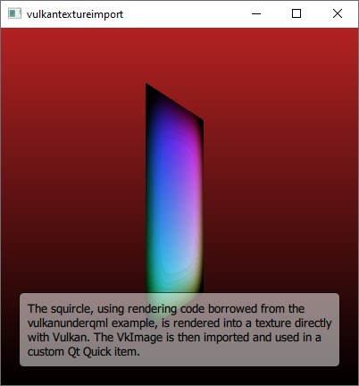

Scene Graph - Vulkan Texture Import
Shows how to use a texture created directly with Vulkan.

The Vulkan Texture Import example shows how an application can import and use a VkImage in the Qt Quick scene. This provides an alternative to the underlay or overlay approaches when it comes to integrating native Vulkan rendering.
This example is equivalent in most ways to the Metal Texture Import example. The Vulkan rendering code is taken from the Vulkan Under QML example.